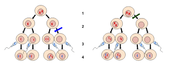

Sitting with the genetic counselor: inheritance, probability, and our family's pedigree

Nondisjunction during meiosis
What Type of Genetic Disorder Is This?
Patau Syndrome is a chromosomal disorder — specifically a numerical chromosome abnormality called trisomy, meaning three copies of a chromosome instead of two. It is autosomal, meaning it involves one of the 22 non-sex chromosome pairs (chromosome 13 is not the X or Y chromosome).
There are three distinct forms:
- Full Trisomy 13 (~94% of cases): Every cell contains an extra chromosome 13, caused by nondisjunction — an error during meiosis (egg or sperm formation) where chromosome 13 fails to separate properly.
- Translocation Trisomy 13 (~5%): Extra chromosomal material from chromosome 13 attaches to another chromosome. This form can sometimes be passed down from a parent who carries a balanced chromosomal rearrangement.
- Mosaic Trisomy 13 (~1%): Only some cells carry the extra chromosome. Symptoms are often less severe.
Dominant, Recessive, or Neither?
The terms "dominant" and "recessive" apply to single-gene disorders, where one or two copies of a faulty gene cause disease. Patau Syndrome is not a single-gene condition — it is a chromosomal one. Because an entire extra chromosome is present, the traditional dominant/recessive framework does not apply here.
- Mutation type: Chromosomal (numerical — extra chromosome 13), not a point gene mutation
- Dominant / Recessive: Not applicable
- Sex-linked or Autosomal: Autosomal (chromosome 13 is not a sex chromosome)
Parent Genotypes & Probability of Passing On
In the most common form — Full Trisomy 13 — both parents typically have entirely normal chromosomes (46,XX or 46,XY). The condition arises from a spontaneous error during egg or sperm formation. The risk of recurrence in a future pregnancy is approximately 1% above the baseline population risk, though this increases with maternal age.
Advanced maternal age is the strongest known risk factor, as older eggs are more susceptible to nondisjunction errors during cell division.
In Translocation Trisomy 13, a parent may carry a "balanced translocation" — the total amount of chromosomal material is normal, so they are unaffected, but they can pass an unbalanced version on to a child.
Punnett Square
Note: A standard Punnett square does NOT apply to Full Trisomy 13, since it results from random nondisjunction — not predictable single-gene inheritance. The table below illustrates a simplified translocation carrier scenario only.
| Parent B — Normal (N) | Parent B — Normal (N) | |
|---|---|---|
| Parent A — Normal (N) | NN Unaffected, not a carrier |
NN Unaffected, not a carrier |
| Parent A — Carrier (T) | TN Carrier — unaffected |
T+N Affected — Trisomy 13 |
Pedigree — Three Generations
Sample pedigree — translocation carrier scenario, 3 generations.
Squares = male · Circles = female · Filled/red border = affected · Dot inside = carrier